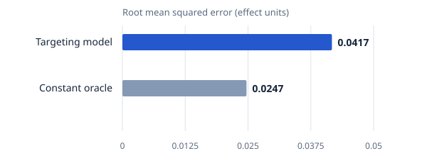
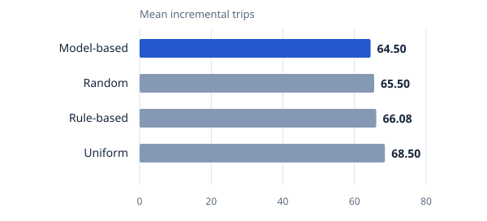
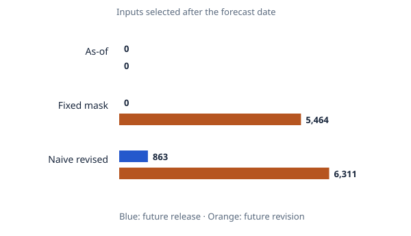
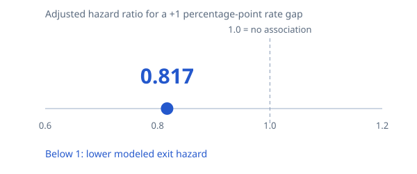
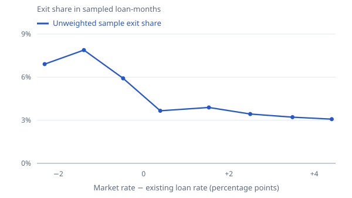
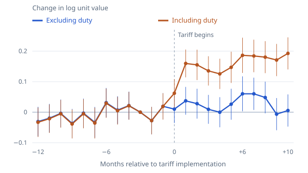

I test effect estimates against known answers, then compare spending rules at the same budget in simulated markets held out from training.
Follow the question. Examine the evidence.
My research in economics and quantitative finance, with the method, finding, and supporting results together.
Question
Who should get the offer?
Result0.0417known-truth HTE RMSE
The complex targeting model has not earned its advantage. The learner misses the recovery benchmark. In the budget experiment, a uniform allocation also produces more incremental trips than the model-based rule.
Semi-synthetic validation, not a measured effect of a real NYC promotion. The oracle knows the true average effect; it is a test benchmark, not a deployable policy.
The model misses the simple benchmark
Effect-estimation error · lower is better

What this shows. The targeting model has more error than a constant benchmark that knows the true average effect. This test does not support a claim that the model reliably identifies who benefits more.
View exact values & source
| Estimator | RMSE |
|---|---|
| Targeting model | 0.0417 |
| Constant oracle | 0.0247 |
Source: CasualLab/artifacts/benchmarks/heterogeneity/hte_recovery.json
Download figure (SVG){kind=link}
Equal budgets, no targeting advantage
Incremental trips · eight held-out simulated markets

What this shows. With a budget of 1,000 in each market, the model-based policy averages 64.50 extra trips versus 68.50 for uniform allocation. These are simulated policy outcomes, not field-experiment estimates.
View exact values & source
| Allocation rule | Mean incremental trips |
|---|---|
| Model-based | 64.49589085777113 |
| Random | 65.5022313812971 |
| Rule-based | 66.08454126083961 |
| Uniform | 68.49668956342123 |
Source: CasualLab/artifacts/benchmarks/policy_results.csv
Download figure (SVG){kind=link}
Hindsight enters through two doors
7,985 feature cells audited under each rule

What this shows. Strict as-of uses only information known at the time. Fixed mask keeps the original release availability but imports 5,464 later revisions. Unrestricted latest values also introduce 863 future releases. The two counts can overlap; do not add them.
View exact values & source
| Information rule | Future-release cells | Future-revision cells |
|---|---|---|
| As-of | 0 | 0 |
| Fixed mask | 0 | 5464 |
| Naive revised | 863 | 6311 |
Source: Macroeconomics/data/generated/official_pilot/feature_leakage_audit.parquet
Download figure (SVG){kind=link}
All six GDP models change rank
Same availability; different data revisions · 8 final holdout forecasts · horizon 0

What this shows. In the final GDP holdout, Elastic Net moves from fourth to first when later revisions replace the original values. AR(1) moves from first to second. Both predictor values and scoring targets are revised, while release availability stays fixed. Eight forecasts (July 2024–April 2026) are too few to establish general model superiority.
View exact values & source
| Model | Strict as-of rank | Revised fixed-mask rank |
|---|---|---|
| AR(1) | 1 | 2 |
| Bridge | 6 | 5 |
| Elastic Net | 4 | 1 |
| Gradient boost | 3 | 4 |
| Historical mean | 2 | 3 |
| No change | 5 | 6 |
Source: Macroeconomics/data/generated/official_pilot/model_stability.parquet
Download figure (SVG)The adjusted association remains negative
Complementary log-log model · estimation sample, 2021–2023

What this shows. A one-percentage-point larger rate gap is associated with an 18.3% lower conditional hazard in this model (1 − 0.817). This is a relative association, not an 18.3-point fall in monthly probability. No confidence interval is displayed; this is not a causal estimate.
View exact values & source
| Model | Rate-gap coefficient | Hazard ratio | Loan-months |
|---|---|---|---|
| Complementary log-log | -0.2018 | 0.817 | 3808045 |
Source: RealEstate/reports/loan_hazard_analysis.md
Download figure (SVG){kind=link}
The sample shows the broad rate-gap pattern
Unweighted estimation sample · 2021–2023

What this shows. Each point is a rate-gap group, placed at its mean gap. The sample overrepresents loans that exit; these unweighted shares are not population monthly probabilities. The downward pattern has reversals and differs from the adjusted model above.
View exact values & source
| Rate-gap group | Mean gap (pp) | Unweighted sample exit share (%) | Loan-months |
|---|---|---|---|
| < −200 bp | -2.32 | 6.909 | 120158 |
| −200 to −100 | -1.4 | 7.886 | 654515 |
| −100 to 0 | -0.48 | 5.918 | 991436 |
| 0 to +100 | 0.39 | 3.66 | 650129 |
| +100 to +200 | 1.53 | 3.89 | 370268 |
| +200 to +300 | 2.5 | 3.433 | 498736 |
| +300 to +400 | 3.49 | 3.215 | 518394 |
| > +400 bp | 4.41 | 3.077 | 208188 |
Source: RealEstate/reports/loan_hazard_analysis.md
Download figure (SVG){kind=link}
Duty-inclusive costs rise; pre-duty values barely move
Average post-tariff effect across three sample windows

What this shows. The pre-duty effect stays close to +0.025 log points in all windows, rather than showing a large supplier-side price cut. Duty-inclusive effects stay near +0.15. Unit values are imperfect price proxies.
View exact values & source
| Window | Excluding duty (log points) | Including duty (log points) |
|---|---|---|
| Pre-4A | 0.021639 | 0.152483 |
| End 2019 | 0.026291 | 0.156235 |
| Full | 0.025288 | 0.154435 |
Source: TariffIncidence/data/results/window_sensitivity.json
Download figure (SVG)The divergence appears after the tariff
Stacked event study · never-treated products as controls

What this shows. Thin vertical lines show reported 95% intervals. The omitted reference month is −3. Pre-duty values show no sustained offsetting decline; duty-inclusive values rise after treatment. This figure uses the report’s rounded estimates.
View exact values & source
| Event month | Excluding duty | CI low | CI high | Including duty | CI low | CI high |
|---|---|---|---|---|---|---|
| -12 | -0.0307 | -0.079 | 0.0176 | -0.033 | -0.0814 | 0.0153 |
| -11 | -0.0196 | -0.0663 | 0.0272 | -0.0213 | -0.0681 | 0.0254 |
| -10 | -0.0038 | -0.0492 | 0.0415 | -0.0053 | -0.0508 | 0.0401 |
| -9 | -0.0367 | -0.0841 | 0.0107 | -0.0387 | -0.086 | 0.0087 |
| -8 | -0.0032 | -0.0509 | 0.0445 | -0.0052 | -0.0529 | 0.0426 |
| -7 | -0.0333 | -0.0838 | 0.0172 | -0.0355 | -0.0861 | 0.015 |
| -6 | 0.0313 | -0.0167 | 0.0793 | 0.0294 | -0.0187 | 0.0775 |
| -5 | 0.0068 | -0.0386 | 0.0523 | 0.0049 | -0.0406 | 0.0503 |
| -4 | 0.0217 | -0.024 | 0.0673 | 0.0209 | -0.0248 | 0.0665 |
| -3 | 0.0 | 0.0 | 0.0 | 0.0 | 0.0 | 0.0 |
| -2 | -0.0275 | -0.0724 | 0.0174 | -0.0276 | -0.0725 | 0.0173 |
| -1 | 0.0193 | -0.0238 | 0.0624 | 0.019 | -0.0241 | 0.0621 |
| 0 | 0.01 | -0.0357 | 0.0558 | 0.0621 | 0.0158 | 0.1083 |
| 1 | 0.0372 | -0.0083 | 0.0828 | 0.1597 | 0.1142 | 0.2052 |
| 2 | 0.0279 | -0.0211 | 0.0769 | 0.155 | 0.1052 | 0.2048 |
| 3 | 0.0093 | -0.0381 | 0.0567 | 0.1353 | 0.0873 | 0.1833 |
| 4 | -0.0001 | -0.0494 | 0.0492 | 0.1255 | 0.0759 | 0.1751 |
| 5 | 0.0261 | -0.0247 | 0.0769 | 0.1469 | 0.0958 | 0.1981 |
| 6 | 0.0602 | 0.003 | 0.1174 | 0.1863 | 0.1286 | 0.244 |
| 7 | 0.0602 | 0.0073 | 0.113 | 0.1842 | 0.131 | 0.2375 |
| 8 | 0.0481 | -0.0037 | 0.1 | 0.1803 | 0.1279 | 0.2327 |
| 9 | -0.0064 | -0.0591 | 0.0463 | 0.1709 | 0.1181 | 0.2237 |
| 10 | 0.0055 | -0.0472 | 0.0583 | 0.1926 | 0.14 | 0.2452 |
Source: TariffIncidence/reports/tariff_incidence_results.md
Download figure (SVG){kind=link}
Every scenario falls below zero after fees
All 144 scenarios · fixed fee of 4 bp (0.04%)

What this shows. Each vertical pair is the same scenario before and after the 4 bp fee. Even the best gross edge (2.39 bp) is below the fee. All orange points are below zero. Overlapping scenarios must not be summed.
View exact values & source
| Symbol | Phase | Horizon | Decision delay (events) | Order delay (events) | Gross edge (bp) | Net edge (bp) |
|---|---|---|---|---|---|---|
| ETHUSDT | replication_test | clock_5000ms | 0 | 0 | -4.768465 | -8.768465 |
| ETHUSDT | replication_test | clock_5000ms | 0 | 1 | -4.768465 | -8.768465 |
| ETHUSDT | replication_test | clock_5000ms | 0 | 5 | -4.768465 | -8.768465 |
| ETHUSDT | replication_test | clock_5000ms | 1 | 0 | -4.768465 | -8.768465 |
| ETHUSDT | replication_test | clock_5000ms | 1 | 1 | -4.768465 | -8.768465 |
| ETHUSDT | replication_test | clock_5000ms | 1 | 5 | -4.768465 | -8.768465 |
| ETHUSDT | replication_test | clock_5000ms | 5 | 0 | -4.768465 | -8.768465 |
| ETHUSDT | replication_test | clock_5000ms | 5 | 1 | -4.768465 | -8.768465 |
| ETHUSDT | replication_test | clock_5000ms | 5 | 5 | -4.768465 | -8.768465 |
| BTCUSDT | replication_test | event_20 | 5 | 5 | -0.31103 | -4.31103 |
| BTCUSDT | replication_test | event_20 | 0 | 5 | -0.310029 | -4.310029 |
| BTCUSDT | replication_test | event_20 | 5 | 0 | -0.310029 | -4.310029 |
| BTCUSDT | replication_test | event_20 | 1 | 5 | -0.308846 | -4.308846 |
| BTCUSDT | replication_test | event_20 | 5 | 1 | -0.308846 | -4.308846 |
| BTCUSDT | replication_test | event_20 | 1 | 1 | -0.303881 | -4.303881 |
| BTCUSDT | replication_test | event_20 | 0 | 1 | -0.299964 | -4.299964 |
| BTCUSDT | replication_test | event_20 | 1 | 0 | -0.299964 | -4.299964 |
| BTCUSDT | replication_test | clock_1000ms | 5 | 5 | -0.286797 | -4.286797 |
| BTCUSDT | replication_test | clock_1000ms | 0 | 5 | -0.259468 | -4.259468 |
| BTCUSDT | replication_test | clock_1000ms | 5 | 0 | -0.259468 | -4.259468 |
| BTCUSDT | replication_test | clock_1000ms | 1 | 5 | -0.256589 | -4.256589 |
| BTCUSDT | replication_test | clock_1000ms | 5 | 1 | -0.256589 | -4.256589 |
| BTCUSDT | replication_test | event_20 | 0 | 0 | -0.255473 | -4.255473 |
| BTCUSDT | replication_test | clock_1000ms | 1 | 1 | -0.24959 | -4.24959 |
| BTCUSDT | replication_test | clock_1000ms | 0 | 1 | -0.240947 | -4.240947 |
| BTCUSDT | replication_test | clock_1000ms | 1 | 0 | -0.240947 | -4.240947 |
| BTCUSDT | replication_test | clock_1000ms | 0 | 0 | -0.216151 | -4.216151 |
| ETHUSDT | replication_test | event_20 | 5 | 5 | -0.024026 | -4.024026 |
| ETHUSDT | replication_test | clock_1000ms | 5 | 5 | -0.018949 | -4.018949 |
| ETHUSDT | replication_test | event_20 | 1 | 5 | -0.004938 | -4.004938 |
| ETHUSDT | replication_test | event_20 | 5 | 1 | -0.004938 | -4.004938 |
| ETHUSDT | replication_test | event_20 | 0 | 5 | -0.001744 | -4.001744 |
| ETHUSDT | replication_test | event_20 | 5 | 0 | -0.001744 | -4.001744 |
| ETHUSDT | primary_test | event_100 | 5 | 5 | -0.001706 | -4.001706 |
| ETHUSDT | replication_test | clock_1000ms | 1 | 5 | 0.000657 | -3.999343 |
| ETHUSDT | replication_test | clock_1000ms | 5 | 1 | 0.000657 | -3.999343 |
| ETHUSDT | replication_test | clock_1000ms | 0 | 5 | 0.004368 | -3.995632 |
| ETHUSDT | replication_test | clock_1000ms | 5 | 0 | 0.004368 | -3.995632 |
| ETHUSDT | primary_test | event_100 | 1 | 5 | 0.011531 | -3.988469 |
| ETHUSDT | primary_test | event_100 | 5 | 1 | 0.011531 | -3.988469 |
| ETHUSDT | primary_test | event_100 | 0 | 5 | 0.015032 | -3.984968 |
| ETHUSDT | primary_test | event_100 | 5 | 0 | 0.015032 | -3.984968 |
| ETHUSDT | replication_test | event_20 | 1 | 1 | 0.019916 | -3.980084 |
| ETHUSDT | primary_test | event_100 | 1 | 1 | 0.025154 | -3.974846 |
| ETHUSDT | replication_test | clock_1000ms | 1 | 1 | 0.028872 | -3.971128 |
| ETHUSDT | primary_test | event_100 | 0 | 1 | 0.029896 | -3.970104 |
| ETHUSDT | primary_test | event_100 | 1 | 0 | 0.029896 | -3.970104 |
| ETHUSDT | replication_test | event_20 | 0 | 1 | 0.036258 | -3.963742 |
| ETHUSDT | replication_test | event_20 | 1 | 0 | 0.036258 | -3.963742 |
| ETHUSDT | primary_test | event_100 | 0 | 0 | 0.036961 | -3.963039 |
| ETHUSDT | replication_test | clock_1000ms | 0 | 1 | 0.046746 | -3.953254 |
| ETHUSDT | replication_test | clock_1000ms | 1 | 0 | 0.046746 | -3.953254 |
| ETHUSDT | replication_test | event_20 | 0 | 0 | 0.062076 | -3.937924 |
| ETHUSDT | replication_test | clock_1000ms | 0 | 0 | 0.075435 | -3.924565 |
| BTCUSDT | replication_test | clock_5000ms | 5 | 5 | 0.078329 | -3.921671 |
| BTCUSDT | replication_test | clock_5000ms | 1 | 5 | 0.082302 | -3.917698 |
| BTCUSDT | replication_test | clock_5000ms | 5 | 1 | 0.082302 | -3.917698 |
| BTCUSDT | replication_test | clock_5000ms | 0 | 5 | 0.084506 | -3.915494 |
| BTCUSDT | replication_test | clock_5000ms | 5 | 0 | 0.084506 | -3.915494 |
| BTCUSDT | replication_test | clock_5000ms | 1 | 1 | 0.094273 | -3.905727 |
| BTCUSDT | replication_test | clock_5000ms | 0 | 1 | 0.101917 | -3.898083 |
| BTCUSDT | replication_test | clock_5000ms | 1 | 0 | 0.101917 | -3.898083 |
| BTCUSDT | replication_test | clock_5000ms | 0 | 0 | 0.118346 | -3.881654 |
| ETHUSDT | replication_test | event_100 | 5 | 5 | 0.121997 | -3.878003 |
| ETHUSDT | replication_test | event_100 | 1 | 5 | 0.136646 | -3.863354 |
| ETHUSDT | replication_test | event_100 | 5 | 1 | 0.136646 | -3.863354 |
| ETHUSDT | replication_test | event_100 | 0 | 5 | 0.140423 | -3.859577 |
| ETHUSDT | replication_test | event_100 | 5 | 0 | 0.140423 | -3.859577 |
| BTCUSDT | primary_test | clock_1000ms | 0 | 5 | 0.142462 | -3.857538 |
| BTCUSDT | primary_test | clock_1000ms | 5 | 0 | 0.142462 | -3.857538 |
| BTCUSDT | primary_test | clock_1000ms | 1 | 5 | 0.142669 | -3.857331 |
| BTCUSDT | primary_test | clock_1000ms | 5 | 1 | 0.142669 | -3.857331 |
| BTCUSDT | primary_test | clock_1000ms | 0 | 1 | 0.146384 | -3.853616 |
| BTCUSDT | primary_test | clock_1000ms | 1 | 0 | 0.146384 | -3.853616 |
| BTCUSDT | primary_test | clock_1000ms | 0 | 0 | 0.147068 | -3.852932 |
| BTCUSDT | primary_test | clock_1000ms | 1 | 1 | 0.147101 | -3.852899 |
| BTCUSDT | primary_test | clock_1000ms | 5 | 5 | 0.147879 | -3.852121 |
| ETHUSDT | replication_test | event_100 | 1 | 1 | 0.154275 | -3.845725 |
| ETHUSDT | replication_test | event_100 | 0 | 1 | 0.162785 | -3.837215 |
| ETHUSDT | replication_test | event_100 | 1 | 0 | 0.162785 | -3.837215 |
| ETHUSDT | replication_test | event_100 | 0 | 0 | 0.174813 | -3.825187 |
| BTCUSDT | primary_test | event_100 | 5 | 5 | 0.179269 | -3.820731 |
| BTCUSDT | primary_test | event_100 | 1 | 5 | 0.186457 | -3.813543 |
| BTCUSDT | primary_test | event_100 | 5 | 1 | 0.186457 | -3.813543 |
| BTCUSDT | primary_test | event_100 | 0 | 5 | 0.188205 | -3.811795 |
| BTCUSDT | primary_test | event_100 | 5 | 0 | 0.188205 | -3.811795 |
| BTCUSDT | primary_test | clock_5000ms | 5 | 5 | 0.189379 | -3.810621 |
| BTCUSDT | replication_test | event_100 | 5 | 5 | 0.192134 | -3.807866 |
| BTCUSDT | primary_test | clock_5000ms | 0 | 5 | 0.193769 | -3.806231 |
| BTCUSDT | primary_test | clock_5000ms | 5 | 0 | 0.193769 | -3.806231 |
| BTCUSDT | primary_test | clock_5000ms | 1 | 1 | 0.194084 | -3.805916 |
| BTCUSDT | primary_test | clock_5000ms | 1 | 5 | 0.194109 | -3.805891 |
| BTCUSDT | primary_test | clock_5000ms | 5 | 1 | 0.194109 | -3.805891 |
| BTCUSDT | primary_test | clock_5000ms | 0 | 1 | 0.197025 | -3.802975 |
| BTCUSDT | primary_test | clock_5000ms | 1 | 0 | 0.197025 | -3.802975 |
| BTCUSDT | primary_test | event_100 | 1 | 1 | 0.197133 | -3.802867 |
| BTCUSDT | replication_test | event_100 | 1 | 5 | 0.197349 | -3.802651 |
| BTCUSDT | replication_test | event_100 | 5 | 1 | 0.197349 | -3.802651 |
| BTCUSDT | replication_test | event_100 | 0 | 5 | 0.199901 | -3.800099 |
| BTCUSDT | replication_test | event_100 | 5 | 0 | 0.199901 | -3.800099 |
| BTCUSDT | primary_test | event_100 | 0 | 1 | 0.202454 | -3.797546 |
| BTCUSDT | primary_test | event_100 | 1 | 0 | 0.202454 | -3.797546 |
| BTCUSDT | primary_test | clock_5000ms | 0 | 0 | 0.207923 | -3.792077 |
| BTCUSDT | primary_test | event_100 | 0 | 0 | 0.213716 | -3.786284 |
| BTCUSDT | replication_test | event_100 | 1 | 1 | 0.215372 | -3.784628 |
| BTCUSDT | replication_test | event_100 | 0 | 1 | 0.223938 | -3.776062 |
| BTCUSDT | replication_test | event_100 | 1 | 0 | 0.223938 | -3.776062 |
| BTCUSDT | replication_test | event_100 | 0 | 0 | 0.238146 | -3.761854 |
| ETHUSDT | primary_test | event_20 | 0 | 5 | 0.382312 | -3.617688 |
| ETHUSDT | primary_test | event_20 | 1 | 1 | 0.382312 | -3.617688 |
| ETHUSDT | primary_test | event_20 | 5 | 0 | 0.382312 | -3.617688 |
| ETHUSDT | primary_test | event_20 | 1 | 5 | 0.38366 | -3.61634 |
| ETHUSDT | primary_test | event_20 | 5 | 1 | 0.38366 | -3.61634 |
| BTCUSDT | primary_test | event_20 | 0 | 5 | 0.383941 | -3.616059 |
| BTCUSDT | primary_test | event_20 | 1 | 5 | 0.383941 | -3.616059 |
| BTCUSDT | primary_test | event_20 | 5 | 0 | 0.383941 | -3.616059 |
| BTCUSDT | primary_test | event_20 | 5 | 1 | 0.383941 | -3.616059 |
| BTCUSDT | primary_test | event_20 | 5 | 5 | 0.384298 | -3.615702 |
| ETHUSDT | primary_test | event_20 | 0 | 1 | 0.385906 | -3.614094 |
| ETHUSDT | primary_test | event_20 | 1 | 0 | 0.385906 | -3.614094 |
| ETHUSDT | primary_test | event_20 | 5 | 5 | 0.392195 | -3.607805 |
| BTCUSDT | primary_test | event_20 | 1 | 1 | 0.394186 | -3.605814 |
| BTCUSDT | primary_test | event_20 | 0 | 1 | 0.395237 | -3.604763 |
| BTCUSDT | primary_test | event_20 | 1 | 0 | 0.395237 | -3.604763 |
| BTCUSDT | primary_test | event_20 | 0 | 0 | 0.421172 | -3.578828 |
| ETHUSDT | primary_test | event_20 | 0 | 0 | 0.474321 | -3.525679 |
| ETHUSDT | primary_test | clock_1000ms | 0 | 5 | 0.643476 | -3.356524 |
| ETHUSDT | primary_test | clock_1000ms | 1 | 1 | 0.643476 | -3.356524 |
| ETHUSDT | primary_test | clock_1000ms | 5 | 0 | 0.643476 | -3.356524 |
| ETHUSDT | primary_test | clock_1000ms | 1 | 5 | 0.645684 | -3.354316 |
| ETHUSDT | primary_test | clock_1000ms | 5 | 1 | 0.645684 | -3.354316 |
| ETHUSDT | primary_test | clock_1000ms | 0 | 1 | 0.649366 | -3.350634 |
| ETHUSDT | primary_test | clock_1000ms | 1 | 0 | 0.649366 | -3.350634 |
| ETHUSDT | primary_test | clock_1000ms | 5 | 5 | 0.659672 | -3.340328 |
| ETHUSDT | primary_test | clock_1000ms | 0 | 0 | 0.834689 | -3.165311 |
| ETHUSDT | primary_test | clock_5000ms | 0 | 0 | 2.385231 | -1.614769 |
| ETHUSDT | primary_test | clock_5000ms | 0 | 1 | 2.385231 | -1.614769 |
| ETHUSDT | primary_test | clock_5000ms | 0 | 5 | 2.385231 | -1.614769 |
| ETHUSDT | primary_test | clock_5000ms | 1 | 0 | 2.385231 | -1.614769 |
| ETHUSDT | primary_test | clock_5000ms | 1 | 1 | 2.385231 | -1.614769 |
| ETHUSDT | primary_test | clock_5000ms | 1 | 5 | 2.385231 | -1.614769 |
| ETHUSDT | primary_test | clock_5000ms | 5 | 0 | 2.385231 | -1.614769 |
| ETHUSDT | primary_test | clock_5000ms | 5 | 1 | 2.385231 | -1.614769 |
| ETHUSDT | primary_test | clock_5000ms | 5 | 5 | 2.385231 | -1.614769 |
Source: assets/data/microstructure_backtest_reference.json
Download figure (SVG)Apparent opportunities disappear after costs
Number of positive scenarios, out of 144

What this shows. 110 of 144 scenarios have positive gross results; zero have positive net results. This is a cost check on one four-hour exploratory capture, not a test of live profitability or cross-day reliability.
View exact values & source
| Cost treatment | Positive scenarios | Total scenarios |
|---|---|---|
| Before fees | 110 | 144 |
| After fees | 0 | 144 |
Source: assets/data/microstructure_backtest_reference.json
Download figure (SVG)Explore metrics and individual scenarios
Loading the bounded scenario summary…
Research reference only. One four-hour capture, simulated market orders, adjacent pseudo-heldout phases, and no profitability or capacity claim.
Loading published evidence…
The learner improves on the naïve baseline but not on the oracle benchmark.
Read chart as a table
Can a model identify who benefits most?
Compare held-out effects with known truth and a constant oracle.
RMSE is 0.0417 versus 0.0247 for the oracle; no HTE claim is made.
Semi-synthetic; not a live-market effect.
Chart → artifact → pinned revision → sourcehte_recovery.json
| Path | Kind | Size |
|---|
No paths match this view.
Semi-synthetic; not a live-market effect.
Chart values are bundled from the named, versioned research artifact.
No account, hidden state, or private data is required to inspect this release.